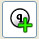
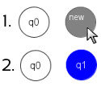

Add State-Tool
 Add new states to the DFA. Move the mouse to the desired position and click. A window will open where you can set the name and select if it should be a
starting/accepting
state. Add as many states as your automaton needs.
